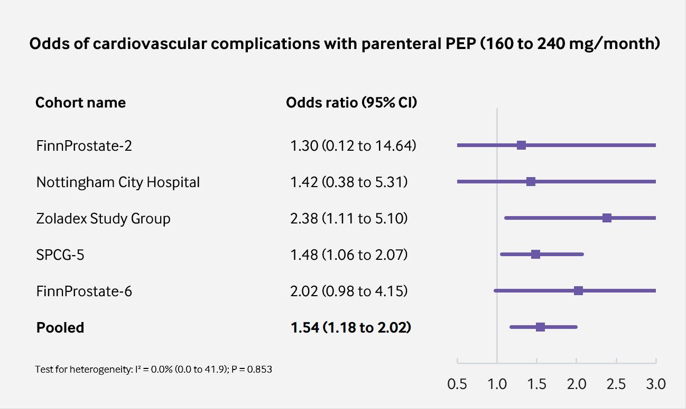
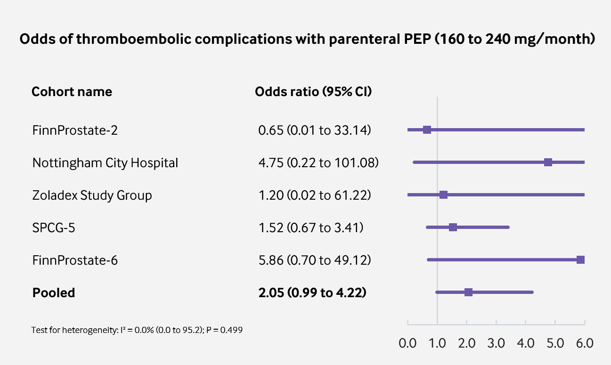
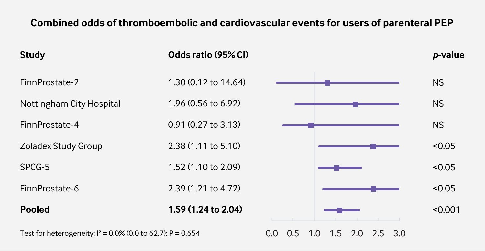
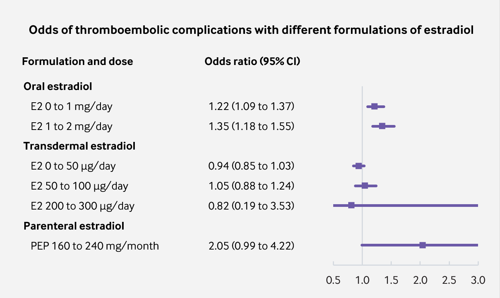

Analysis of Cardiovascular and Thromboembolic Toxicity with High Dose Parenteral Polyestradiol Phosphate in the Treatment of Prostate Cancer
By Sam | First published April 6, 2020 | Last modified October 5, 2020
In the late 1980s, there was a renewed interest in the Nordic countries for estrogen therapy as a treatment for prostate cancer. The reason for this was that, in small pilot studies, high doses of polyestradiol phosphate (PEP) administered parenterally did not seem to result in a greater incidence of cardiovascular complications (Henriksson et al., 1988; Stege et al., 1989; Carlström et al., 1989; Henriksson et al., 1999). This finding was in direct contrast to earlier studies that had reported significantly greater incidences of cardiovascular morbidity and mortality in elderly male prostate cancer patients treated with oral ethinylestradiol (EE) and diethylstilbestrol (DES) (Bailar & Byar, 1972; Henriksson & Edhag, 1986).
At sufficient exposure, systemic estrogenic activity has been associated with a greater synthesis of liver proteins, lipids and coagulation factors such as sex-hormone binding globulin (SHBG) and triglycerides (Ottosson et al., 1986). In turn, many of these unphysiologic homeostatic changes are correlated with increased cardiovascular and thromboembolic toxicity (Scarabin, 2014; Seal, 2019; Khan et al., 2019). In addition to pure estrogens, raloxifene usage also has been shown to confer increased risk of venous thromboembolism (Vinogradova, Coupland & Hippisley-Cox, 2019). This is of significance as it was also found in the pilot studies that, while high dose EE therapy greatly increased the synthesis of SHBG and coagulation factor VIII, the effect was significantly less marked with parenteral PEP (Stege et al., 1988; Henriksson et al., 1990). However, both have been shown to induce a significant decrease in antithrombin III; a liver protein that prevents the formation of abnormal blood clots (Aro et al., 1990). By contrast, LHRH agonists do not appear to alter the production of this protein (Varenhorst et al., 1986). These differences were attributed to the disproportionate estrogenic exposure that occurs within the liver relative to other tissues via the oral route (von Schoultz et al., 1989; Ockrim, Lalani & Abel, 2006). Moreover, synthetic estrogens such as EE are resistant to enzymatic liver metabolism due to their augmented or non steroidal chemical structures and cause further disproportionate hepatic receptor activation (Kuhl, 2005). For this reason, intramuscular therapy with PEP; a prodrug for estradiol, was predicted to have much lesser cardiovascular and thromboembolic toxicity than with conventional estrogen therapy (Hedlund, 1999).
During the 1990s and 2000s, several multicenter clinical trials were conducted to establish the efficacy and safety of high dose parenteral estradiol therapy; as compared to bilateral orchiectomy or LHRH agonists (Lycette et al., 2006). The results of these clinical trials are of obvious importance to gender affirming hormone therapy as transgender women usually require long term use of estrogen formulations and a good number choose parenteral forms. It may not be possible to extrapolate these findings to all doses and types of estrogen esters. Nonetheless, these clinical trials give us some idea of the cardiovascular and thromboembolic toxicity of parenteral estradiol. For reference, a 160 to 240 mg/month dose of PEP has been found to produce estradiol levels of between approximately 300 to 500 pg/mL at steady state (Graph). It is obvious from findings that parenteral PEP is associated with a much lesser incidence of adverse cardiovascular and thromboembolic events than was oral EE (Mikkola et al., 1998; Hedlund & Henriksson, 2000; Hedlund et al., 2002). However, it is much less clear if toxicity is eliminated completely. In most of these studies there was inadequate sample power to show if the incidence was changed significantly (Bishop et al., 1989; Lukkarinen & Kontturi, 1994). Nevertheless, one of the largest studies did conclude that parenteral PEP ought not to be used as primary therapy for prostate cancer because of a significant increase in the incidence of such complications (Mikkola et al., 2005; Mikkola et al., 2007). The results of this clinical trial are probably one factor in why the use of high dose estrogen therapy in the treatment of prostate cancer diminished thereafter in many countries.
{kind=link}
I thought it would be interesting to bring together all of the data in a pooled meta-analysis. In total, there were six different clinical trials evaluating polyestradiol phosphate. I noted the number of cardiovascular and thromboembolic events in each study for the treatment group exposed to high dose parenteral estradiol and for the comparison group (which had no exposure to estrogens). Unfortunately, one of these clinical trials (FinnProstate-4) did not differentiate between which complications were cardiovascular and which were thromboembolic and so it was not possible to include. There was patient follow-up for a total of 1,890 patients. From this information, I was able to calculate the odds of cardiovascular and thromboembolic complications in patients exposed to therapy for each individual study and for the overall sample. In addition, I calculated a 95% confidence interval. I may turn these findings into part of a more comprehensive article in the future. For now, I have presented them here in the form of some (hopefully useful) infographics (Sources for reference values in Fig. 4 were Vinogradova, Coupland & Hippisley-Cox, 2019 and Langley et al., 2013).
The sources for each study can be found here.
Pooling together the findings of six randomised controlled trials reveals that parenteral estrogen therapy is associated with an increased incidence of cardiovascular and thromboembolic complications; both separately and combined. Nevertheless, due to poor study precision, the exact risk with high doses of parenteral estrogens remains to be accurately quantified.
|  |
|---|
| Figure 1: Odds of CVD with parenteral PEP vs. orchiectomy or LHRH agonist (p = 0.0017; significant at p<0.01). |
|  |
|---|
| Figure 2: Odds of VTE with parenteral PEP vs. orchiectomy or LHRH agonist (p = 0.052; significant at p<0.10). |
|  |
|---|
| Figure 3: Combined odds of VTE and CVD with parenteral PEP vs. orchiectomy or LHRH agonist (p = 0.0003). |
|  |
|---|
| Figure 4: Odds of VTE with parenteral PEP compared to other formulations and doses. |
References
- Aro, J. L., Haapiainen, R. K., Rannikko, S. A., & Alfthan, O. S. (1989). High Dose Polyoestradiol Phosphate with and without Acetosalicylic Acid versus Orchiectomy in the Treatment of Prostatic Cancer. British Journal of Urology, 63(5), 512–514. [DOI:10.1111/j.1464-410x.1989.tb05946.x]
- Aro, J., Haapiainen, R., Rasi, V., Rannikko, S., & Alfthan, O. (1990). The Effect of Parenteral Estrogen versus Orchiectomy on Blood Coagulation and Fibrinolysis in Prostatic Cancer Patients. European Urology, 17(2), 161–165. [DOI:10.1159/000464026]
- Aro, J., Ruutu, M., Juusela, H., Hansson, E., & Permi, J. (1993). Polyestradiol phosphate (160 mg/month) or LHRH analog (buserelin depot) in the treatment of locally advanced or metastasized prostatic cancer. The Finnprostate Group. Annales Chirurgiae et Gynaecologiae, 82(Supplementum 206), 5–8. [Google Scholar] [PubMed] [PDF]
- Bailar, J. C., Byar, D. P., & (1970). Estrogen treatment for cancer of the prostate. Early results with 3 doses of diethylstilbestrol and placebo. Cancer, 26(2), 257–261. [DOI:10.1002/1097-0142(197008)26:2<257::aid-cncr2820260203>3.0.co;2-9]
- Bishop, M. C., Lemberger, R. J., Selby, C., & Lawrence, W. T. (1989). Oestrogen Dosage in Prostatic Cancer: the Threshold Effect? British Journal of Urology, 64(3), 290–296. [DOI:10.1111/j.1464-410x.1989.tb06016.x]
- Carlström, K., Collste, L., Eriksson, A., Henriksson, P., Pousette, Å., Stege, R., & von Schoultz, B. (1989). A comparison of androgen status in patients with prostatic cancer treated with oral and/or parenteral estrogens or by orchidectomy. The Prostate, 14(2), 177–182. [DOI:10.1002/pros.2990140210]
- Haapiainen, R., Rannikko, S., & Alfthan, O. (1990). Comparison of Primary Orchiectomy and Polyoestradiol Phosphate in the Treatment of Advanced Prostatic Cancer. British Journal of Urology, 66(1), 94–97. [DOI:10.1111/j.1464-410x.1990.tb14872.x]
- Hedlund, P. O. (1999). The Scandinavian Prostatic Cancer Group: A Short Review of its History and Work. Scandinavian Journal of Urology and Nephrology, 33(203), 53–56. [DOI:10.1080/003655999750016285-2]
- Hedlund, P. O., & Henriksson, P. (2000). Parenteral estrogen versus total androgen ablation in the treatment of advanced prostate carcinoma: effects on overall survival and cardiovascular mortality. Urology, 55(3), 328–332. [DOI:10.1016/s0090-4295(99)00580-4]
- Hedlund, P. O., Ala-Opas, M., Brekkan, E., Damber, J. E., Damber, L., Hagerman, I., Haukaas, S., Henriksson, P., Iversen, P., Pousette, Å., Rasmussen, F., Salo, J., Vaage, S., & Varenhorst, E. (2002). Parenteral Estrogen versus Combined Androgen Deprivation in the Treatment of Metastatic Prostatic Cancer - Scandinavian Prostatic Cancer Group (SPCG) Study No. 5. Scandinavian Journal of Urology and Nephrology, 36(6), 405–413. [DOI:10.1080/003655902762467549]
- Hedlund, P. O., Damber, J., Hagerman, I., Haukaas, S., Henriksson, P., Iversen, P., Johansson, R., Klarskov, P., Lundbeck, F., Rasmussen, F., Varenhorst, E., Viitanen, J., Olov Hedlund, P., Damber, J., Hagerman, I., Haukaas, S., Henriksson, P., Iversen, P., Johansson, R., Klarskov, P., Lundbeck, F., Rasmussen, F., Varenhorst, E., Viitanen, J., , & (2008). Parenteral estrogen versus combined androgen deprivation in the treatment of metastatic prostatic cancer: Part 2. Final evaluation of the Scandinavian Prostatic Cancer Group (SPCG) Study No. 5. Scandinavian Journal of Urology and Nephrology, 42(3), 220–229. [DOI:10.1080/00365590801943274]
- Hedlund, P. O., Johansson, R., Damber, J. E., Hagerman, I., Henriksson, P., Iversen, P., Klarskov, P., Mogensen, P., Rasmussen, F., & Varenhorst, E. (2011). Significance of pretreatment cardiovascular morbidity as a risk factor during treatment with parenteral oestrogen or combined androgen deprivation of 915 patients with metastasized prostate cancer: Evaluation of cardiovascular events in a randomized trial. Scandinavian Journal of Urology and Nephrology, 45(5), 346–353. [DOI:10.3109/00365599.2011.585820]
- Henriksson, P., & Edhag, O. (1986). Orchidectomy versus oestrogen for prostatic cancer: cardiovascular effects. BMJ, 293(6544), 413–415. [DOI:10.1136/bmj.293.6544.413]
- Henriksson, P., Eriksson, A., Stege, R., Collste, L., Pousette, Å., Von Schoultz, B., & Carlström, K. (1988). Cardiovascular follow-up of patients with prostatic cancer treated with single-drug polyestradiol phosphate. The Prostate, 13(3), 257–261. [DOI:10.1002/pros.2990130308]
- Henriksson, P., Blombäck, M., Eriksson, A., Stege, R., & Carlström, K. (1990). Effect of Parenteral Oestrogen on the Coagulation System in Patients with Prostatic Carcinoma. British Journal of Urology, 65(3), 282–285. [DOI:10.1111/j.1464-410x.1990.tb14728.x]
- Henriksson, P., Carlström, K., Pousette, A., Gunnarsson, P. O., Johansson, C. J., Eriksson, B., Altersgård-Brorsson, A. K., Nordle, O., & Stege, R. (1999). Time for revival of estrogens in the treatment of advanced prostatic carcinoma? Pharmacokinetics, and endocrine and clinical effects, of a parenteral estrogen regimen. The Prostate, 40(2), 76–82. [DOI:10.1002/(SICI)1097-0045(19990701)40:2<76::AID-PROS2>3.0.CO;2-Q]
- Jacobi, G. H., Altwein, J. E., Kurth, K. H., Basting, R., & Hohenfellner, R. (1980). Treatment of Advanced Prostatic Cancer with Parenteral Cyproterone Acetate: A Phase III Randomised Trial. British Journal of Urology, 52(3), 208–215. [DOI:10.1111/j.1464-410x.1980.tb02961.x]
- Jacobi, G. H., Tunn, U., & Senge, T. (1982). Clinical experience with cyproterone acetate for palliation of inoperable prostate cancer. In Jacobi, G. H., & Hohenfellner, R. (Eds.). Prostate Cancer (International Perspectives in Urology, Volume 3) (pp. 305–319). Baltimore: Williams & Wilkins. [Google Scholar] [Google Books] [OpenLibrary] [WorldCat] [Archive.org] [PDF]
- Khan, J., Schmidt, R. L., Spittal, M. J., Goldstein, Z., Smock, K. J., & Greene, D. N. (2019). Venous Thrombotic Risk in Transgender Women Undergoing Estrogen Therapy: A Systematic Review and Metaanalysis. Clinical Chemistry, 65(1), 57–66. [DOI:10.1373/clinchem.2018.288316]
- Kuhl, H. (2005). Pharmacology of Estrogens and Progestogens: Influence of Different Routes of Administration. Climacteric, 8(Suppl 1), 3–63. [DOI:10.1080/13697130500148875] [PDF]
- Langley, R. E., Cafferty, F. H., Alhasso, A. A., Rosen, S. D., Sundaram, S. K., Freeman, S. C., Pollock, P., Jinks, R. C., Godsland, I. F., Kockelbergh, R., Clarke, N. W., Kynaston, H. G., Parmar, M. K., & Abel, P. D. (2013). Cardiovascular outcomes in patients with locally advanced and metastatic prostate cancer treated with luteinising-hormone-releasing-hormone agonists or transdermal oestrogen: the randomised, phase 2 MRC PATCH trial (PR09). The Lancet Oncology, 14(4), 306–316. [DOI:10.1016/s1470-2045(13)70025-1]
- Lukkarinen, O., Kontturi, M., & (1994). Comparison of a Long-Acting LHRH Agonist and Polyoestradiol Phosphate in the Treatment of Advanced Prostatic Carcinoma. Scandinavian Journal of Urology and Nephrology, 28(2), 171–178. [DOI:10.3109/00365599409180495]
- Lycette, J. L., Bland, L. B., Garzotto, M., & Beer, T. M. (2006). Parenteral Estrogens for Prostate Cancer: Can a New Route of Administration Overcome Old Toxicities? Clinical Genitourinary Cancer, 5(3), 198–205. [DOI:10.3816/cgc.2006.n.037]
- Mikkola, A. K., Ruutu, M. L., Aro, J. L., Rannikko, S. A., Salo, J. O., & the Finnprostate Group. (1998). Parenteral polyoestradiol phosphate vs orchidectomy in the treatment of advanced prostatic cancer. Efficacy and cardiovascular complications: a 2-year follow-up report of a national, prospective prostatic cancer study. BJU International, 82(1), 63–68. [DOI:10.1046/j.1464-410x.1998.00688.x]
- Mikkola, A., Aro, J., Rannikko, S., Oksanen, H., Ruutu, M., & (2005). Cardiovascular complications in patients with advanced prostatic cancer treated by means of orchiectomy or polyestradiol phosphate. Scandinavian Journal of Urology and Nephrology, 39(4), 294–300. [DOI:10.1080/00365590510031228]
- Mikkola, A., Aro, J., Rannikko, S., Ruutu, M., & (2007). Ten-year survival and cardiovascular mortality in patients with advanced prostate cancer primarily treated by intramuscular polyestradiol phosphate or orchiectomy. The Prostate, 67(4), 447–455. [DOI:10.1002/pros.20547]
- Namer, M. (1988). Clinical applications of antiandrogens. Journal of Steroid Biochemistry, 31(4), 719–729. [DOI:10.1016/0022-4731(88)90023-4]
- Ockrim, J., Lalani, E., & Abel, P. (2006). Therapy Insight: parenteral estrogen treatment for prostate cancer—a new dawn for an old therapy. Nature Clinical Practice Oncology, 3(10), 552–563. [DOI:10.1038/ncponc0602]
- Ottosson, U., Carlström, K., Johansson, B., & von Schoultz, B. (1986). Estrogen Induction of Liver Proteins and High-Density Lipoprotein Cholesterol: Comparison between Estradiol Valerate and Ethinyl Estradiol. Gynecologic and Obstetric Investigation, 22(4), 198–205. [DOI:10.1159/000298914]
- Scarabin, P. (2014). Hormone Therapy and Venous Thromboembolism among Postmenopausal Women. Frontiers of Hormone Research, 43, 21–32. / Granata, R., & Isgaard, J. (Eds.). Cardiovascular Issues in Endocrinology (Frontiers of Hormone Research, Volume 43) (pp. 21–32). Basel: Karger. [DOI:10.1159/000360554] [Google Books]
- Schröder, F. H., & Radlmaier, A. (2002). Steroidal Antiandrogens. In Jordan, C. V., & Furr, B. J. A. (Eds.). Hormone Therapy in Breast and Prostate Cancer (pp. 325–346). Totowa, New Jersey: Humana Press. [DOI:10.1007/978-1-59259-152-7_15]
- Seal, L. J. (2019). Cardiovascular disease in transgendered people: A review of the literature and discussion of risk. JRSM Cardiovascular Disease, 8, 204800401988074. [DOI:10.1177/2048004019880745]
- Stege, R., Carlström, K., Collste, L., Eriksson, A., Henriksson, P., Pousette, Å., & von Schoultz, B. (1989). Single-drug parenteral estrogen treatment in prostatic cancer: A study of two maintenance-dose regimens. The Prostate, 14(2), 183–188. [DOI:10.1002/pros.2990140211]
- Tunn, U. W., Radlmaier, A., & Neumann, F. (1988). Antiandrogens in Cancer Treatment. In Stoll, B. A. (Ed.). Endocrine Management of Cancer: Contemporary Therapy (Contemporary Therapy, Volume 2) (pp. 43–56). Basel: Karger. [DOI:10.1159/000415355]
- Varenhorst, E., Svensson, M., Hjertberg, H., & Malmqvist, E. (1986). Antithrombin III concentration, thrombosis, and treatment with luteinising hormone releasing hormone agonist in prostatic carcinoma. BMJ, 292(6525), 935–936. [DOI:10.1136/bmj.292.6525.935]
- Vinogradova, Y., Coupland, C., & Hippisley-Cox, J. (2019). Use of hormone replacement therapy and risk of venous thromboembolism: nested case-control studies using the QResearch and CPRD databases. BMJ, 364, k4810. [DOI:10.1136/bmj.k4810]
- von Schoultz, B., Carlström, K., Collste, L., Eriksson, A., Henriksson, P., Pousette, Å., & Stege, R. (1989). Estrogen therapy and liver function—metabolic effects of oral and parenteral administration. The Prostate, 14(4), 389–395. [DOI:10.1002/pros.2990140410]
- Wenderoth, U. K., & Jacobi, G. H. (1983). Gonadotropin-releasing hormone analogues for palliation of carcinoma of the prostate. World Journal of Urology, 1(1), 40–48. [DOI:10.1007/bf00326861]